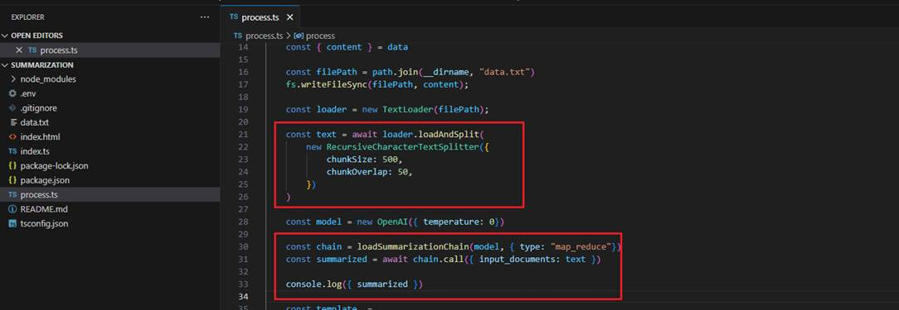
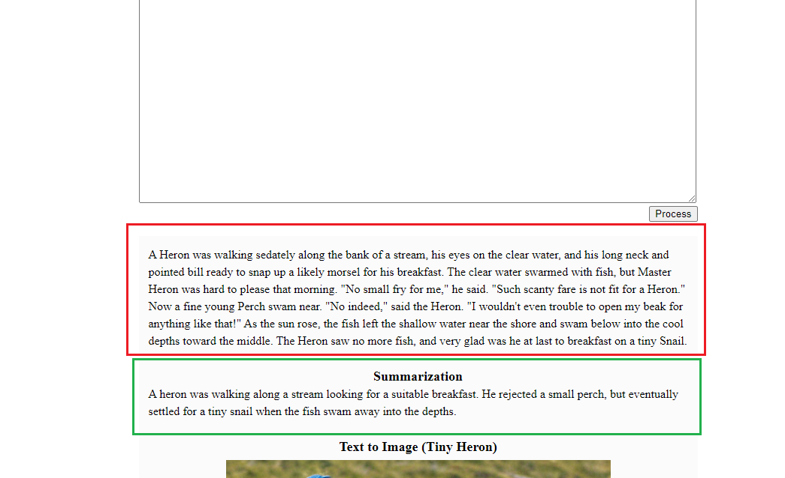
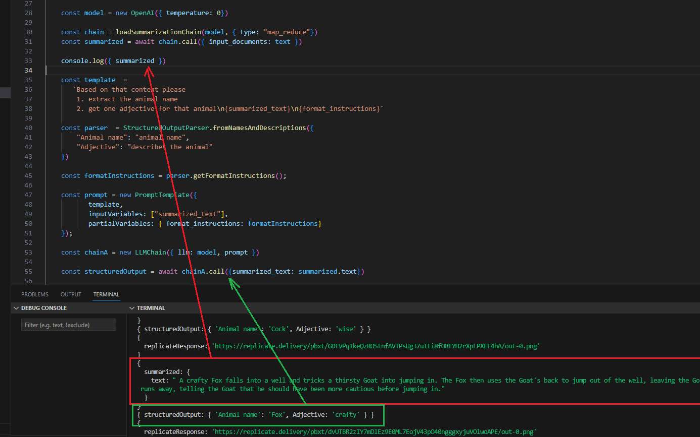
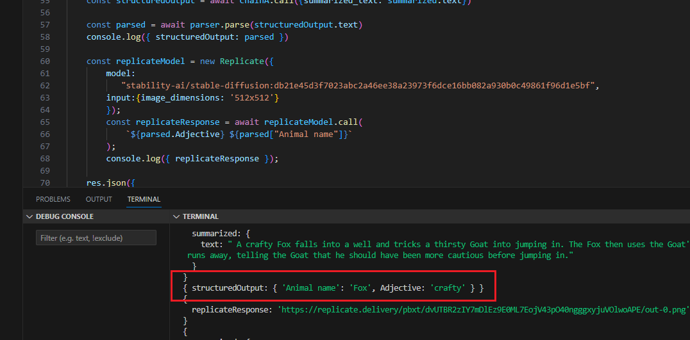
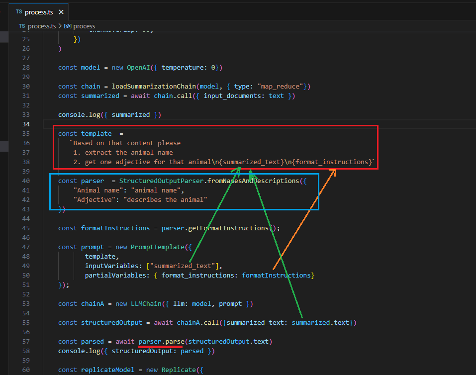
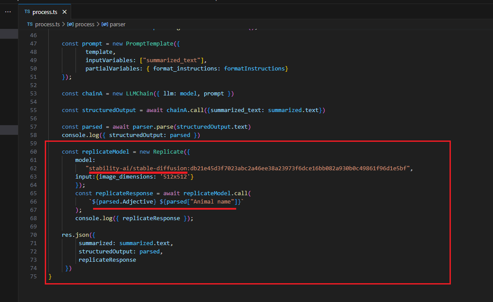
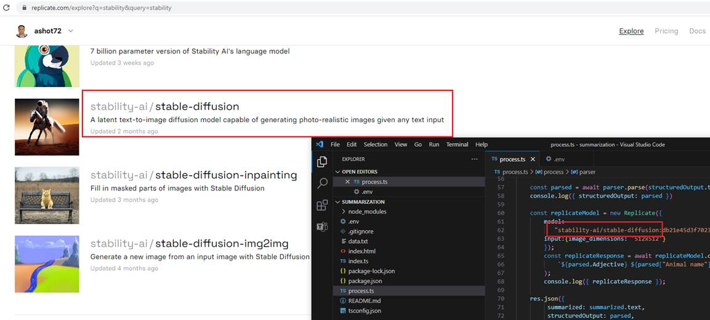
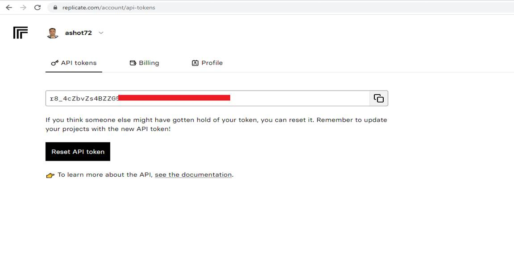

LangChain Summarization and Image Generation
GitHub Repository:
Video link:
You can read about LangChain in my GitHub Repositry when discussing LangChain Documentation Helper https://github.com/Ashot72/LangChain-Documentation-Helper
In this app first we are going to paste some content about an animal story, and note it can be very long and we will not get maximum token exceed exception as we chank the content up.
ChatGPT can summarize text by analyzing the content and generating a condensed version while preserving the main ideas and critical information.

Figure 1
In our app we get an animal story, chunk it up first to avoid maximum token issue then summarize it.

Figure 2
Instead of reading a big document you can read the generated summarized content.
Figure 3
After getting the summarized content I want to have a structured (JSON) document generated from the newly generated summarized content. The
structure I want to be is Animal name and Adjective keys with their respective values.

Figure 4
The key point here is the template structure. I mentioned that I want to extract the animal (or animals name) and describe it as an adjective. In my StructuredOuptputParser I defined the fields
and by calling parse method I can get the structured JSON output that I will pass it to the front end with other properties. Note, that I also pass format instructions to the template.

Figure 5
Here you see my structured JSON object.

Figure 6
On the front end you see that we are going to generate an image from that JSON properties composed by Adjective then Animal name keys.

Figure 7
The last thing that we do is generating image form the text described above using Replicate.
Replicate https://replicate.com/blog/machine-learning-needs-better-tools runs machine learning models on the cloud. They have a library of open-source
models that we can run with a few lines of code.
Figure 8
You can sign up and get you api key to use it in the app. Seems you can generate some images free of charge at some point.

Figure 9
You see we use open-source stability-ai stable-diffusion model to generate an image from a text.
Figure 10
You see the image generated and we render it on the page using img tag.

Figure 11
Note, that we do not explicitly specify API keys in the code. It will be picked up from .env file when specified as OPEN_API_KEY and REPLICATE_API_KEY.